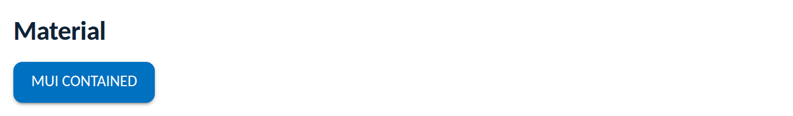

Themes
Teams using Material UI (MUI) keep its component behaviour and re-skin it with
Novus tokens. MUI decomposes palette colours at runtime (it computes colour
channels), so a raw var() string in the palette throws, the Novus
pattern is the same as Ant Design's: read the computed token values from the
document at runtime and rebuild the theme when the mode flips. Verified
against MUI v9.
import "novus-design-kit/js/novus-theme.js";
import "novus-design-kit/tokens.css";import { createTheme, ThemeProvider } from "@mui/material/styles";
const t = (name) =>
getComputedStyle(document.documentElement).getPropertyValue(name).trim();
// call inside your app so a theme flip can rebuild it
const novusMui = () => createTheme({
// non-colour values are CSS-consumed, so var() references are fine here
typography: { fontFamily: "var(--font-sans)" },
shape: { borderRadius: "var(--radius-md)" },
// palette colours are decomposed by MUI -> runtime reads, never var() strings
palette: {
primary: { main: t("--accent"), light: t("--accent-hover"), dark: t("--accent-active"), contrastText: t("--text-on-accent") },
error: { main: t("--danger"), contrastText: t("--text-on-accent") },
background: { default: t("--bg"), paper: t("--surface") },
text: { primary: t("--text"), secondary: t("--text-secondary") },
divider: t("--border"),
},
});
<ThemeProvider theme={novusMui()}>
<App />
</ThemeProvider>Rebuild the theme when the kit toggle flips, so the palette re-reads the dark token values (same tick pattern as the Ant Design guide):
const [themeTick, setThemeTick] = useState(0);
const toggle = () => { window.novusTheme.toggle(); setThemeTick(themeTick + 1); };
// novusMui() is re-called on re-render and picks up the dark valuesRendered from this guide's own sample project, executed and verified on 2026-08-26 against @mui/material 9.3.

getComputedStyle, a var() string anywhere in palette throws (MUI error #9). Non-colour values (font, radius) take var() references fine.sx props and styled components, keep referencing var(--…) tokens directly.